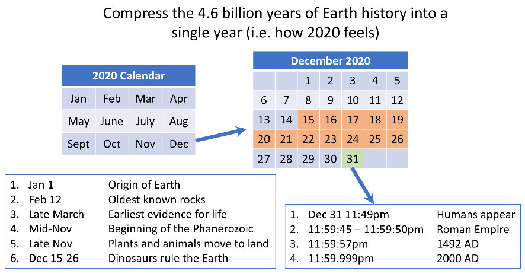
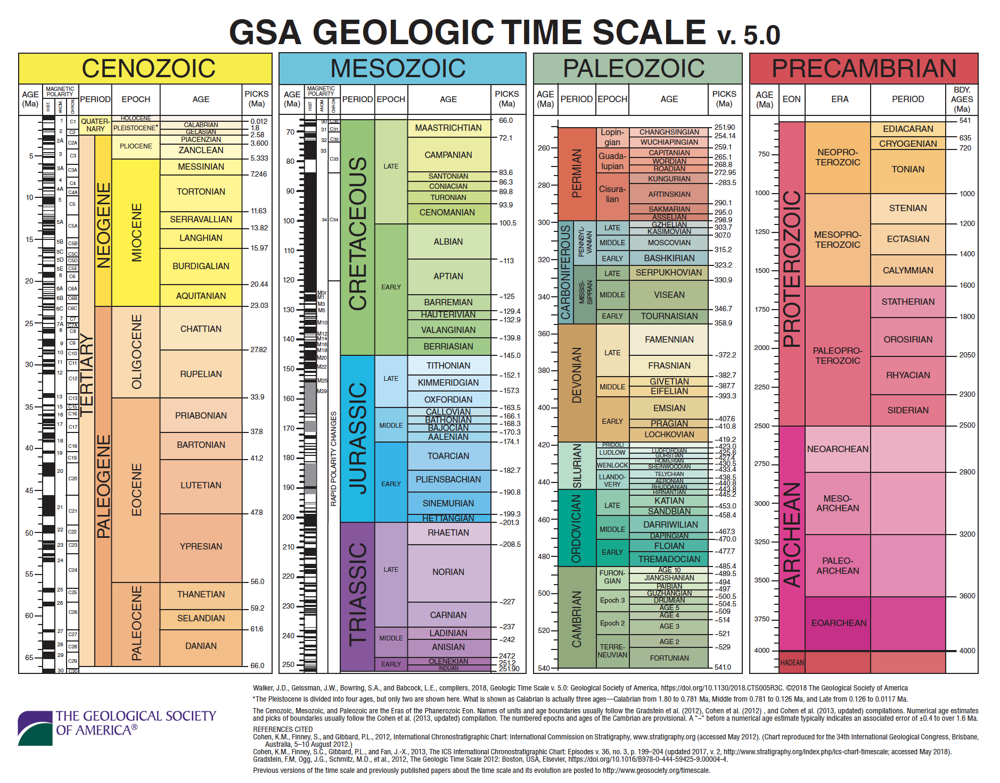
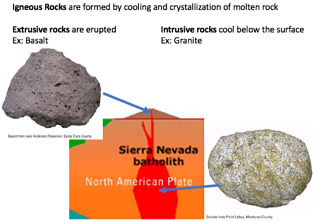
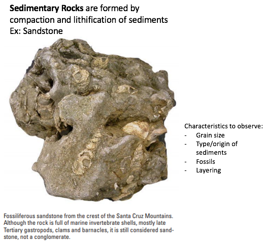
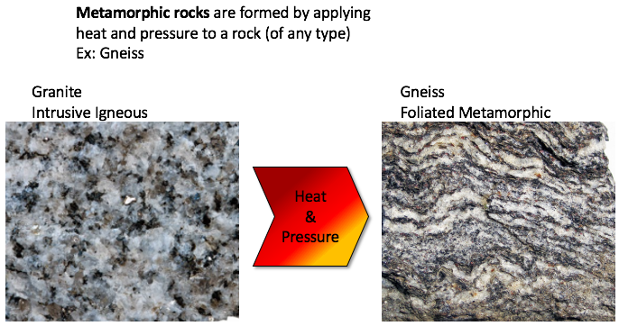
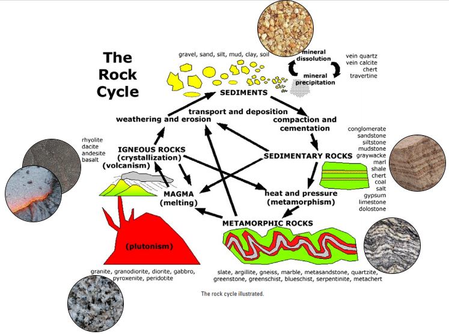
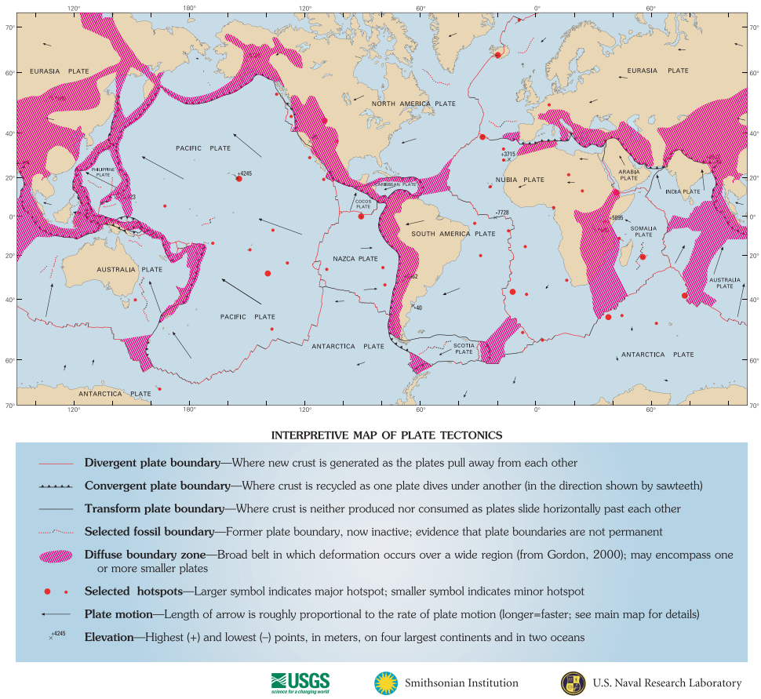
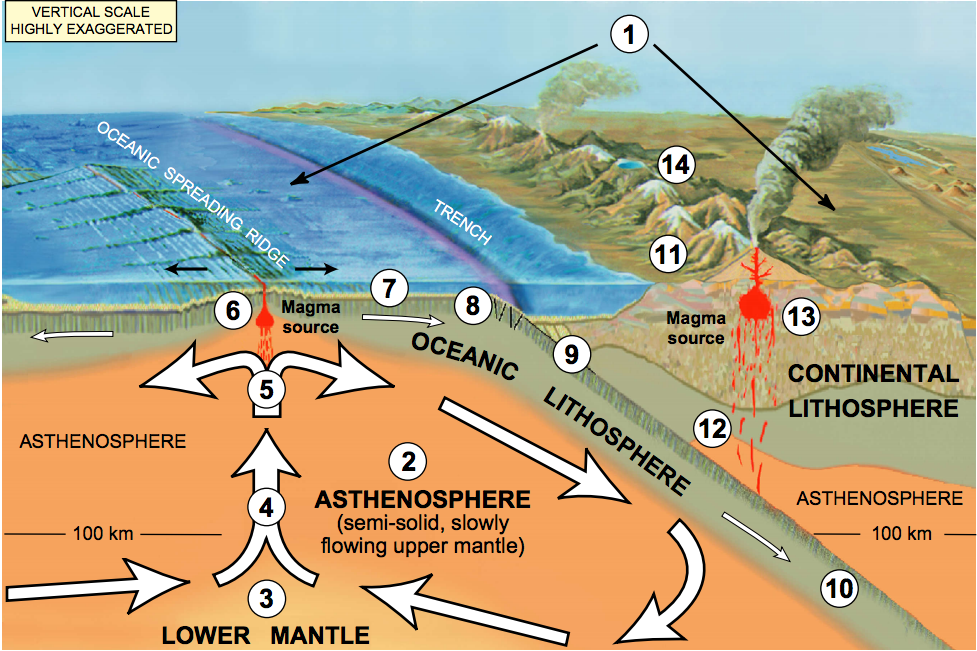
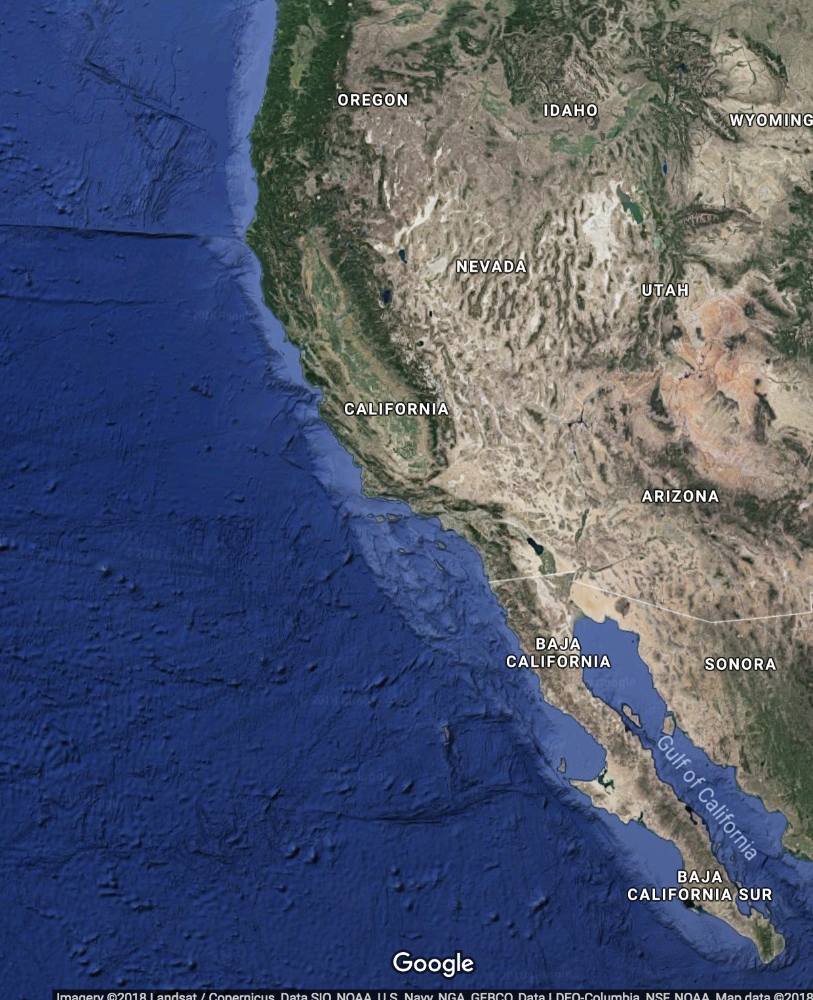

2.2 The Dynamic Earth¶
Goal: Build upon background geologic knowledge to introduce and motivate earth science questions that we can study using data science computational methods.
Outline:
Geologic time
Earth’s structure
Types of rocks and the rock cycle
Tectonic plates
Types of plate boundaries
Additional Assigned Reading¶
Earth Science Literacy Principles: The Big Ideas and Supporting Concepts of Earth Science
Geologic Time¶
Earth was formed 4.56 billion years ago (Ga). Concealed in the rocks of the continental crust is a record of nearly all of this history. Earth cooled enough for crustal rocks to begin forming 4.28 Ga. The rock record provides evidence of past Earth dynamics and the evolution of life. Earth scientists divide the 4.56 billion years of Earth history into the geologic timescale to describe these variations. The period from 4.56 Ga to 541 million years ago (Ma) is known as the Precambrian, it’s made up of the Hadean, Archean and Proterozoic Eons, and describes the majority of Earth history (January 1 – mid-November if Earth history was a single year, Figure 1). The end of the Precambrian and the start of the Phanerozoic eon is marked by the Cambrian explosion - a dramatic increase in the diversity and complexity of life. The divisions between different geologic eras are often marked by extreme changes in environment and biodiversity such as during mass extinction events. Figure 2 shows the geologic time scale – DON’T memorize it, DO use it as a reference tool as we continue our study of Earth’s variations through time.
Please watch this ~10 min video: A Brief History of Geologic Time from PBS Eons.

EPS 50 and 102 cover this topics in greater detail.

Figure 1: The history of Earth compressed into a year to illustrate the relative length of different geologic periods.

Figure 2: The geologic time scale. Source: GSA
Earth’s Structure¶
Earth has three major compositional layers the crust, mantle, and core (Shown in Figure 3). These layers are a consequence of the heat that was produced during the accretion of Earth from the early solar disk. Gravitational compaction, decay of radioactive elements, and bombardment by meteorites heated the proto-earth enough to melt the initially random mixture of solar system dust and gases. After melting, the constituent parts were able to stratify by composition. The denser metals (mainly iron and nickel) sank to the interior forming the core while the lighter elements (oxygen, silicon, magnesium, etc.) rose to the top forming the crust and mantle, in a process called differentiation. Earth’s layers were discovered by their response to seismic waves, which is controlled by their physical properties.
The core is the dense, metal deep-interior of Earth, made up of two physical layers the inner-core and outer-core. The inner-core is a solid iron and nickel alloy, and ~1200 km in radius. The inner-core boundary (ICB) is the surface at which the temperature and pressure conditions within the earth allow this iron and nickel alloy to freeze. The outer-core a ~2300 km thick layer of molten iron and nickel alloy with a kinematic viscosity similar to water (~1x10-6 m2/s). Because the outer-core is liquid seismic shear waves (S-waves) cannot travel through it; a shadow zone is observed where seismographs located greater than ~105° from an earthquake will not record its S-waves. The core – mantle boundary (CMB) is defined by a large discontinuity between the denser, liquid, metal outer-core and the less dense, plastic-solid, rocky mantle.
The mantle and crust make up the rocky outer layers of the earth. They are compositionally distinct. The mantle is a 2850 km thick layer of fairly homogeneous rock, made of just a few dense minerals. The mantle is made of iron and magnesium rich silicate minerals. In the upper mantle olivine, pyroxene, spinel, and garnet are stable. With increasing depth (and therefore increasing temperature and pressure) these mineral phases are no longer stable, and the elements rearrange themselves into the minerals perovskite and ferropericlase in the lower mantle. These phase transitions occur between depths of 400 – 660 km, a region of the mantle known as the transition zone. The material in most of the mantle is a viscoelastic solid; meaning on short-time scales it reacts elastically and will return to its original shape after a stress (such as a seismic wave) is applied, but on long time-scales it will viscously deform and flow.
The crust is the brittle outer ~5 - 30 km of Earth. Crust comes in two flavors: oceanic and continental. The oceanic crust is thinner (5 – 8 km) and denser than the continents. Compositionally oceanic crust is also simpler; it is made of basalt (an extrusive igneous rock) overlain with marine sediments which are deposited through time. Continental crust is thicker (30 – 60 km) and less dense. It is also compositionally and structurally more complex.
The outer-most silicate layers of the earth (crust and upper mantle) can also be divided based on their physical properties into the lithosphere and asthenosphere. The lithosphere is defined by its brittle response to stress. When strongly stressed the lithosphere ruptures producing earthquakes. Elastic energy is released by the rapid displacement on a fault plane. The lithosphere is the outer 100 – 150 km of the earth and is compositionally made of the crust and upper-most mantle. The asthenosphere is the ~150 km of the upper mantle below the lithosphere and is rheologically weaker, it deforms ductilly because of its increased temperature. EPS 50 and EPS 122 cover these topics in greater detail.

Figure 3: Structure of Earth, compositional and mechanical layering.
Types of Rocks and the Rock Cycle¶
There are three types of rocks (igneous, sedimentary, and metamorphic) which are defined by how they are formed. The characteristics of every rock (i.e. grain-size, mineral make up, layering or foliation, presence of fossils) provide evidence of the processes and environment which formed it. The rock cycle (Shown in Figure 8) is used to describe the interconnected systems at work forming the rocks which make up Earth’s crust. Crustal materials are recycled between the different types of rocks, keeping physical and chemical records of their journey through time.
Watch this video clip from Bill Nye the Science Guy episode: Earth’s Crust

EPS 50, 100 A&B cover these topics in greater detail.
Igneous¶
Igneous rocks are formed by the cooling and crystallization of magma (molten rock). Crystallization can happen below Earth’s surface forming intrusive igneous rocks (e.g. granite) or above the surface forming extrusive igneous rocks (e.g. basalt).

Figure 5: Examples of intrusive (granite) and extrusive igneous rocks (basalt). Source: modified from USGS
Sedimentary¶
Sedimentary rocks are formed through the compaction and lithification of sediments (e.g. sandstone). Sediments are the product of weathering and erosion of earlier rocks. Sedimentary rocks provide evidence of their depositional environment and ecosystem.

Figure 6: Example of a sedimentary rock, sandstone. Source: modified from USGS
Metamorphic¶
Metamorphic rocks are formed by the application of heat and pressure to earlier rocks (igneous, sedimentary, or metamorphic). Elevated pressure and temperature conditions cause both physical (structural) and chemical (mineralogical) changes in the rock. The metamorphic grade describes the extent of these changes and increases with increasing pressure and temperature.

Figure 7: Examples of a metamorphic rock and the rock that it formed from.

Figure 8: The rock cycle. Source: modified from USGS
Tectonic Plates¶
The rigid nature of the lithosphere determines its response to tectonic forces (the pushes and pulls between the lithosphere and the mantle). The convective motion of the mantle places a drag force on the base of the lithosphere. The lithosphere is strong but must accommodate stress somewhere, it forms into lithospheric plates. Ruptures occur at the boundaries between plates. Lithospheric (or tectonic) plates are much thinner (~100km) than they are wide (1000 – 10,000 km). Most earthquakes occur at the boundaries between plates and are associated with the interactions between plates (how they move relative to each other). There are twelve major plates (Antarctic, South America, Nazca, Cocos, Pacific, North America, Eurasia, Africa, Arabia, India, Australia, and Philippine) and several minor plates (Caribbean, Juan de Fuca, and Scotia) (Shown in Figure 9).
Watch this video: The Whole Saga of the Supercontinentsfrom PBS Eons.

EPS 50 and EPS 116 covers this topic in greater detail.

Figure 9: Lithospheric plates and relative motions. Source: USGS
Types of Plate Boundaries¶

Figure 10: Divergent and convergent lithospheric plate boundaries. Source: USGS
EPS 50 and EPS 116 covers this topic in greater detail.
Divergent (Constructive)¶
When tectonic forces move lithospheric plates apart a divergent or spreading boundary forms. As the plates spread apart mantle material from below rises to fill the space (Figure 10). As it rises there is less pressure confining it to be solid and it partially melts in process called decompression melting. This melt forms new extrusive igneous basalt – mid-ocean ridge basalt (MORB). Most divergent boundaries occur between oceanic crust (Figure 9) and are called mid-ocean ridges even though they are not strictly in the middle of ocean basins (Figure 11).

Figure 11: Example of a divergent boundary, the Mid-Atlantic Ridge. The South America and Africa plates move apart from each other. Source: Google Earth
Convergent (Destructive)¶
When lithospheric plates push into each other they form a convergent boundary. One plate (the denser of the two) will be pushed down into the asthenosphere in a process called subduction. The subducting slab is recycled into the mantle. Subduction produces surface expressions which depend on the overriding plate. The subduction zone is often marked by a trench and chain of volcanoes. The trench marks where the subducting plate bends down into the mantle. Melting of the subducting plate (and sometimes the base of overriding plate) produces magma that rises to feed the volcanoes (Figure 10 and 12). The largest magnitude and deepest earthquakes occur at subduction zones as the plates stick (accumulate elastic energy) and slip (release elastic energy in earthquake). The subducting plate is colder than the mantle it is pushed into which creates a negative buoyancy (i.e. the slab sinks). If the descending slab remains connected to the surface plate, a slab pull force is generated pulling the slab into the mantle. Slab pull is generally the largest of the forces acting on lithospheric plates and drives the majority of tectonic plate motion from spreading to subduction (Figure 10).

Figure 12: Example of a convergent boundary, the west coast of South America. The Pacific plate subducts below the South America plate forming a trench and chain of volcanoes. Source: Google Earth
Transform (Conservative)¶
At transform boundaries lithospheric plates move past each other without producing or recycling material. Motion between the plates occurs on strike-slip fault systems. They connect segments of subduction zones (e.g. San Andreas fault system, Figure 13) and more commonly connect oceanic ridge segments. Transform boundaries are the most seismically active boundaries but produce smaller earthquakes on average.

Figure 13: Example of a transform boundary, the west coast of North America. The Pacific plate and North America plate move past each other forming the San Andreas strike-slip fault system. Source: Google Earth
Recommended Further Reading (Optional)¶
Chapter 1.2 (pg. 15 – 40) of Fundamentals of Geophysics
Lowrie, W. (2007). Fundamentals of Geophysics, 2nd Edition. Cambridge, UK: Cambridge University Press.
Pg. 167 – 174 and Ch. 9 of Python for Data Analysis
McKinney, W. (2018). Python for Data Analysis: Data Wrangling with Pandas, NumPy, and IPython, 2nd Edition. Sebastopol, CA: O’Reilly Media, Inc.